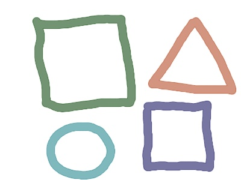
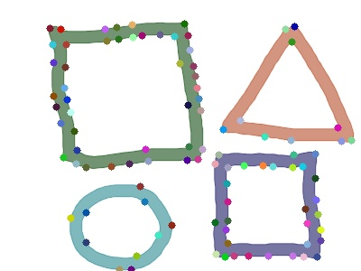
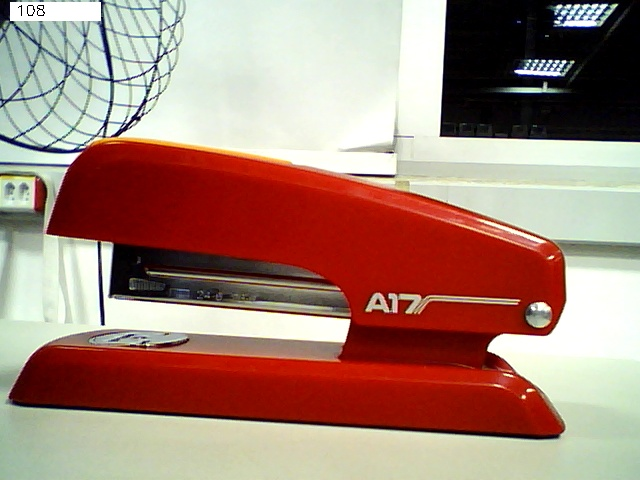

A detecção de features em imagens é uma técnica amplamente utilizada em aplicações como rastreamento de objetos, reconstrução 3D, análise de movimento e realidade aumentada. Features são pontos de interesse em uma imagem que possuem propriedades únicas, como cantos, bordas ou texturas, e que podem ser identificadas de forma robusta mesmo em diferentes condições de iluminação, perspectiva ou escala. Neste trabalho, abordamos a detecção de características em imagens e vídeos, utilizando um dos métodos clássicos de detecção: Good Features to Track. Os experimentos tem o objetivo de explorar e comparar o desempenho desses métodos em cenários com imagens estáticas e magens capturadas ao vivo.
O método goodFeaturesToTrack no OpenCV é uma técnica amplamente utilizada para detectar pontos de interesse em uma imagem, também conhecidos como features ou cantos. Ele é baseado no algoritmo Shi-Tomasi, que é uma extensão do algoritmo de detecção de cantos de Harris. A função considera pequenas janelas (ou blocos) da imagem, com base na variação de intensidade ao redor de cada ponto, calcula a matriz de autocorrelação dos gradientes para cada janela, determinando como a intensidade muda em diferentes direções. Essa funcionalidade é especialmente útil em aplicações onde os pontos detectados são usados para tarefas como rastreamento em tempo real ou análise de movimento em vídeos.
Para realizar a atividade, utilizamos os seguintes recursos:
Inicialmente, criamos um arquivo texto "CMakeLists.txt", que define as configurações do projeto para pada item do projeto.
Código Fonte:
Para cada item do projeto, criamos o arquivo em C++, responsável por implementar as funcionalidades do programa.
Foi utilizada o biblioteca do OpenCV para aplicar os métodos de deteção de Features. O método goodFeaturesToTrack será utilizado para detectar pontos de interesse.
Código Fonte:
Foi utilizada os mesmos métodos de deteção de Features do item anterior. Neste item, vamos fazer a leitura de imagem da webcam e utilizamos a classe cv::VideoWriter para gravar os quadros processados em um arquivo de vídeo.
Código Fonte:
Após a criação desses arquivos, os comandos "cmake ." e, posteriormente, "make" foram executados no terminal para compilar o programa e gerar o arquivo executável correspondente.
Utilizando os programas desenvolvidos e seguindo o roteiro dado, obtivemos os seguintes resultados:
Imegem figuras
Imagem original:
Imagem com feature com 96 bordas:
Imegem objeto
Imagem original:
Imagem com feature com 96 bordas:
Video resultado:
Video resultado:
Nesta atividade, foi implementada a detecção de pontos de interesse em imagens utilizando o método goodFeaturesToTrack da biblioteca OpenCV.
A aplicação foi adaptada para processar tanto imagens estáticas quanto capturas ao vivo de uma webcam, permitindo uma análise dinâmica e interativa.
Além disso, o sistema foi estendido para gravar um vídeo com as features detectadas, integrando funcionalidades de visualização e armazenamento.
O método goodFeaturesToTrack, baseado no algoritmo Shi-Tomasi, demonstrou ser eficaz na identificação de pontos significativos, como cantos e bordas da figura 1
e do vídeo do tabuleiro de xadrez utilizado no experimento. Porém, o algoritmo apresentou limitações em condições de baixa iluminação ou alta complexidade de cena, como no video do grupo e na imagem do grampeador.
Nesses caoso, técnicas mais avançadas, como detecção baseada em descritores (SIFT ou SURF), poderiam ser mais adequadas.